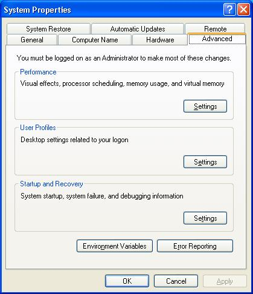
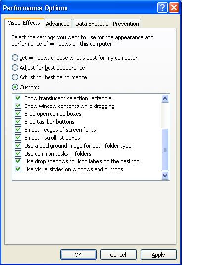

आज पेश है कम्प्यूटर से संबधित मजेदार ट्रिक्स, जिससे आप आसानी से कम्प्युटर की गति बढ़ा सकते हैं साथ ही कम्प्यूटर को आसानी से और जल्दी शटडाउन तथा रिस्टार्ट कर सकते हैं। आजकल सब को पंडित बनने और पाठशाला खोलने काशौक चढ़ा है  तो हम भला पीछे क्यों रहें? ( अन्यथा ना लेवें)
तो हम भला पीछे क्यों रहें? ( अन्यथा ना लेवें)
कम्प्यूटर को जल्दी से शटडाउन तथा रिस्टार्ट करने के लिये आईकॉन बनायें।
- डेस्क टॉप पर खाली जगह में राईट क्लिक करें।
- New पर क्लिक करें Shortcut पर क्लिक करें अब इस तरह की खिड़की खुलेगी इसमें आप shutdown -s -t 00 ( या %windir%\system32\shutdown.exe -s -t 00 या C:\windows\rundll.exe user.exe,exitwindowsexec) लिख कर Next पर क्लिक करें।
- अब जो खिड़की खुली है उसमें Shut Down लिख देवें और Finish पर क्लिक करें।
- जो आईकॉन बना है, उस पर राईट क्लिक कर Properties में जाकर Change icon पर क्लिक करें. मनपसन्द आईकॉन पसन्द करें।
- सारे प्रोग्राम बन्द कर देवें और आईकॉन पर डबल क्लिक करें, कुछ सैकण्ड ठहरें आपका कम्प्यूटर शट डाउन हो चुका है।
इसी तरह shutdown -s -t 00 में -s की जगह -r लिखने से रिस्टार्ट का आईकॉन और -l लिख कर log off का आईकॉन बनाया जा सकता है।
अब सबसे मजेदार ट्रिक जिससे आपके कम्प्यूटर के काम करने की गति कई गुना बढ़ा सकते हैं।
- My Computer पर राईट क्लिक कर Properties में जाकर Advance पर क्लिक करें।
- अब यह खिड़की खुली है, इस खिड़की में Performance वाले विभाग में Setting पर क्लिक करें,

- अब जो खिड़की खुली है उसमें Visual Effect वाले विभाग में नीचे के तीन Option को छोड़कर सब पर से राईट का चिन्ह क्लिक कर हटा देवें इस चित्र में बताये अनुसार

- अब Apply करें ok करें, एक बार फ़िर से ok करें।
- अब किसी भी फ़ोल्डर या Application पर क्लिक करें अरे वाह कम्प्यूटर की स्पीड तो बहुत तेज हो गयी है।
आपके नैट कनेक्शन की जाँच करें
एक और मजेदार ट्रिक जिसमें कभी अगर आपका नैट कनेक्शन कट हो जाता है और आपको पता भी नही चलता और आप परेशान होते रहते हैं, आप जानबा चाहते हैं कि आपका नैट कनेक्शन चालू है या नहीं तो नीचे बताये अनुसार करें
- जैसे उपर आईकॉन बनाया था, ठीक उसी तरह एक आईकॉन बनायें
- जहाँ पहले -s -t 00 लिखा था उस जगह ping 111.111.11.1 -t (यहाँ आप अपना आई पी पता लिखें)
- Next पर क्लिक करें अब जो खिड़की खुली है उसमें भी Ping लिख देवें, और Finish करें।
- पहले की तरह ही कोई मजेदार आईकॉन बना देवें।
- आईकॉन पर डबल क्लिक करें, अगर Request Time Out आ रहा है तो समझ लीजिये की कनेक्शन बन्द है।
- अगर Replay from 111.111.11.1: bytes= 32 time=29ms TTL=126 या ऐसा ही कुछ आ रहा है तो आपका नैट कनेक्शन चालू है ( अंक कम ज्यादा हो सकते हैं)
- आप कस्टमर केयर से संपर्क करें।
हम जब सिस्टम चालू करते हैं तो Window Massanger बड़ा परेशान करता है और आसानी से उसे हटाया नहीं जा सकता तो उसे हटाने के लिये पेश है आसान सा तरीका।
- control pannel पर क्लिक करें, Add & Remove Programes पर क्लिक करें।
- Add / Remove window Components पर क्लिक करे।
- अब जो खिड़की खुलेगी उसमें जाकर सबसे नीचे Window Massanger पर क्लिक करें और वहाँ से राईट का चिन्ह हटा देवें,।
- Next पर क्लिक करें Finish पर क्लिक करें और जो खिड़की खुली है उसे भी बन्द कर देवें।
देखिये अब आपको Window Massanger कभी परेशान नहीं करेगा।
कुछ लोग अक्सर शिकायत करते है कि चिठ्ठे की फ़ोन्ट साइज बहुत छोटी या बड़ी है उन लोगों के लिये पेश एक मजेदार ट्रिक।
इस पेज पर ही Ctrl दबा कर माउस का Scroll बटन ( या पहिये को ) उपर या नीचे घुमायें, मजा आया ना